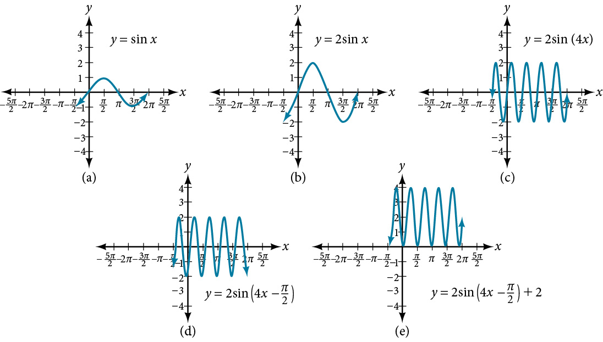
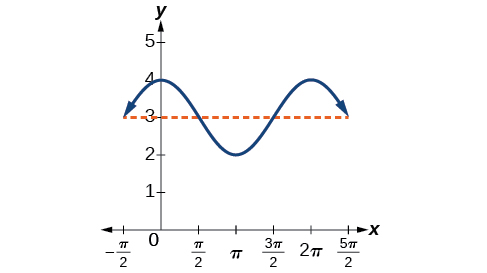
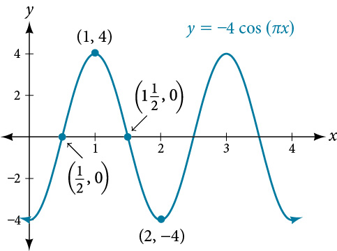
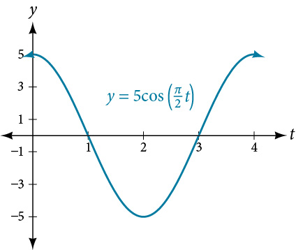
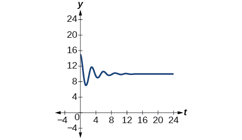
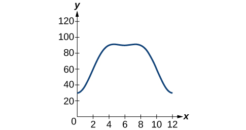
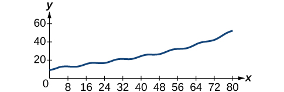

Modeling with Trigonometric Functions
Suppose we charted the average daily temperatures in New York City over the course of one year. We would expect to find the lowest temperatures in January and February and highest in July and August. This familiar cycle repeats year after year, and if we were to extend the graph over multiple years, it would resemble a periodic function.
Many other natural phenomena are also periodic. For example, the phases of the moon have a period of approximately 28 days, and birds know to fly south at about the same time each year.
So how can we model an equation to reflect periodic behavior? First, we must collect and record data. We then find a function that resembles an observed pattern. Finally, we make the necessary alterations to the function to get a model that is dependable. In this section, we will take a deeper look at specific types of periodic behavior and model equations to fit data.
Determining the Amplitude and Period of a Sinusoidal Function
Any motion that repeats itself in a fixed time period is considered periodic motion and can be modeled by a sinusoidal function. The amplitude of a sinusoidal function is the distance from the midline to the maximum value, or from the midline to the minimum value. The midline is the average value. Sinusoidal functions oscillate above and below the midline, are periodic, and repeat values in set cycles. Recall from Graphs of the Sine and Cosine Functions that the period of the sine function and the cosine function is In other words, for any value of
Showing How the Properties of a Trigonometric Function Can Transform a Graph
Show the transformation of the graph of into the graph of
Solution
Consider the series of graphs in Figure 2 and the way each change to the equation changes the image.

Finding the Amplitude and Period of a Function
Find the amplitude and period of the following functions and graph one cycle.
- ⓐⓐ
- ⓑⓑ
- ⓒⓒ
Solution
We will solve these problems according to the models.
- ⓐ involves sine, so we use the form
We know that is the amplitude, so the amplitude is 2. Period is so the period is
See the graph in Figure 3.

Figure 3 - ⓑⓑ involves sine, so we use the form
Amplitude is so the amplitude is Since is negative, the graph is reflected over the x-axis. Period is so the period is
The graph is shifted to the left by units. See Figure 4.

Figure 4 - ⓒ involves cosine, so we use the form
Amplitude is so the amplitude is 1. The period is See Figure 5. This is the standard cosine function shifted up three units.

Figure 5
Finding Equations and Graphing Sinusoidal Functions
One method of graphing sinusoidal functions is to find five key points. These points will correspond to intervals of equal length representing of the period. The key points will indicate the location of maximum and minimum values. If there is no vertical shift, they will also indicate x-intercepts. For example, suppose we want to graph the function We know that the period is so we find the interval between key points as follows.
Starting with we calculate the first y-value, add the length of the interval to 0, and calculate the second y-value. We then add repeatedly until the five key points are determined. The last value should equal the first value, as the calculations cover one full period. Making a table similar to Table 1, we can see these key points clearly on the graph shown in Figure 6.

Graphing Sinusoidal Functions Using Key Points
Graph the function using amplitude, period, and key points.
Solution
The amplitude is The period is (Recall that we sometimes refer to as One cycle of the graph can be drawn over the interval To find the key points, we divide the period by 4. Make a table similar to Table 2, starting with and then adding successively to and calculate See the graph in Figure 7.

Modeling Periodic Behavior
We will now apply these ideas to problems involving periodic behavior.
Modeling an Equation and Sketching a Sinusoidal Graph to Fit Criteria
The average monthly temperatures for a small town in Oregon are given in Table 3. Find a sinusoidal function of the form that fits the data (round to the nearest tenth) and sketch the graph.
| Month | Temperature, |
|---|---|
| January | 42.5 |
| February | 44.5 |
| March | 48.5 |
| April | 52.5 |
| May | 58 |
| June | 63 |
| July | 68.5 |
| August | 69 |
| September | 64.5 |
| October | 55.5 |
| November | 46.5 |
| December | 43.5 |
Solution
Recall that amplitude is found using the formula
Thus, the amplitude is
The data covers a period of 12 months, so which gives
The vertical shift is found using the following equation.
Thus, the vertical shift is
So far, we have the equation
To find the horizontal shift, we input the and values for the first month and solve for
We have the equation See the graph in Figure 8.

Describing Periodic Motion
The hour hand of the large clock on the wall in Union Station measures 24 inches in length. At noon, the tip of the hour hand is 30 inches from the ceiling. At 3 PM, the tip is 54 inches from the ceiling, and at 6 PM, 78 inches. At 9 PM, it is again 54 inches from the ceiling, and at midnight, the tip of the hour hand returns to its original position 30 inches from the ceiling. Let equal the distance from the tip of the hour hand to the ceiling hours after noon. Find the equation that models the motion of the clock and sketch the graph.
Solution
Begin by making a table of values as shown in Table 4.
| Points to plot | ||
|---|---|---|
| Noon | 30 in | |
| 3 PM | 54 in | |
| 6 PM | 78 in | |
| 9 PM | 54 in | |
| Midnight | 30 in |
To model an equation, we first need to find the amplitude.
The clock’s cycle repeats every 12 hours. Thus,
The vertical shift is
There is no horizontal shift, so Since the function begins with the minimum value of when (as opposed to the maximum value), we will use the cosine function with the negative value for In the form the equation is
See Figure 9.

Determining a Model for Tides
The height of the tide in a small beach town is measured along a seawall. Water levels oscillate between 7 feet at low tide and 15 feet at high tide. On a particular day, low tide occurred at 6 AM and high tide occurred at noon. Approximately every 12 hours, the cycle repeats. Find an equation to model the water levels.
Solution
As the water level varies from 7 ft to 15 ft, we can calculate the amplitude as
The cycle repeats every 12 hours; therefore, is
There is a vertical translation of Since the value of the function is at a maximum at we will use the cosine function, with the positive value for
See Figure 10.

Interpreting the Periodic Behavior Equation
The average person’s blood pressure is modeled by the function where represents the blood pressure at time measured in minutes. Interpret the function in terms of period and frequency. Sketch the graph and find the blood pressure reading.
Solution
The period is given by
In a blood pressure function, frequency represents the number of heart beats per minute. Frequency is the reciprocal of period and is given by
See the graph in Figure 11.

Modeling Harmonic Motion Functions
Harmonic motion is a form of periodic motion, but there are factors to consider that differentiate the two types. While general periodic motion applications cycle through their periods with no outside interference, harmonic motion requires a restoring force. Examples of harmonic motion include springs, gravitational force, and magnetic force.
Simple Harmonic Motion
A type of motion described as simple harmonic motion involves a restoring force but assumes that the motion will continue forever. Imagine a weighted object hanging on a spring, When that object is not disturbed, we say that the object is at rest, or in equilibrium. If the object is pulled down and then released, the force of the spring pulls the object back toward equilibrium and harmonic motion begins. The restoring force is directly proportional to the displacement of the object from its equilibrium point. When
Finding the Displacement, Period, and Frequency, and Graphing a Function
For the given functions,
- Find the maximum displacement of an object.
- Find the period or the time required for one vibration.
- Find the frequency.
- Sketch the graph.
- ⓐ
- ⓑ
- ⓒ
Solution
- ⓐ
- The maximum displacement is equal to the amplitude, which is 5.
- The period is
- The frequency is given as
- See Figure 12. The graph indicates the five key points.

Figure 12
- ⓑ
- The maximum displacement is
- The period is
- The frequency is
- See Figure 13.

Figure 13
- ⓒ
- The maximum displacement is
- The period is
- The frequency is
- See Figure 14.

Figure 14
Damped Harmonic Motion
In reality, a pendulum does not swing back and forth forever, nor does an object on a spring bounce up and down forever. Eventually, the pendulum stops swinging and the object stops bouncing and both return to equilibrium. Periodic motion in which an energy-dissipating force, or damping factor, acts is known as damped harmonic motion. Friction is typically the damping factor.
In physics, various formulas are used to account for the damping factor on the moving object. Some of these are calculus-based formulas that involve derivatives. For our purposes, we will use formulas for basic damped harmonic motion models.
Modeling Damped Harmonic Motion
Model the equations that fit the two scenarios and use a graphing utility to graph the functions: Two mass-spring systems exhibit damped harmonic motion at a frequency of cycles per second. Both have an initial displacement of 10 cm. The first has a damping factor of and the second has a damping factor of
Solution
At time the displacement is the maximum of 10 cm, which calls for the cosine function. The cosine function will apply to both models.
We are given the frequency of 0.5 cycles per second. Thus,
The first spring system has a damping factor of Following the general model for damped harmonic motion, we have
Figure 15 models the motion of the first spring system.

The second spring system has a damping factor of and can be modeled as
Figure 16 models the motion of the second spring system.

Analysis
Notice the differing effects of the damping constant. The local maximum and minimum values of the function with the damping factor decreases much more rapidly than that of the function with
Finding a Cosine Function that Models Damped Harmonic Motion
Find and graph a function of the form that models the information given.
- ⓐ
- ⓑ
Finding a Sine Function that Models Damped Harmonic Motion
Find and graph a function of the form that models the information given.
- ⓐ
- ⓑ
Solution
Calculate the value of and substitute the known values into the model.

Analysis
A comparison of the last two examples illustrates how we choose between the sine or cosine functions to model sinusoidal criteria. We see that the cosine function is at the maximum displacement when and the sine function is at the equilibrium point when For example, consider the equation from Example 10. We can see from the graph that when which is the initial amplitude. Check this by setting in the cosine equation:
Using the sine function yields
Thus, cosine is the correct function.
Modeling the Oscillation of a Spring
A spring measuring 10 inches in natural length is compressed by 5 inches and released. It oscillates once every 3 seconds, and its amplitude decreases by 30% every second. Find an equation that models the position of the spring seconds after being released.
Solution
The amplitude begins at 5 in. and deceases 30% each second. Because the spring is initially compressed, we will write A as a negative value. We can write the amplitude portion of the function as
We put in the form as follows:
Now let’s address the period. The spring cycles through its positions every 3 seconds, this is the period, and we can use the formula to find omega.
The natural length of 10 inches is the midline. We will use the cosine function, since the spring starts out at its maximum displacement. This portion of the equation is represented as
Finally, we put both functions together. Our the model for the position of the spring at seconds is given as
See the graph in Figure 21.

Finding the Value of the Damping Constant c According to the Given Criteria
A guitar string is plucked and vibrates in damped harmonic motion. The string is pulled and displaced 2 cm from its resting position. After 3 seconds, the displacement of the string measures 1 cm. Find the damping constant.
Solution
The displacement factor represents the amplitude and is determined by the coefficient in the model for damped harmonic motion. The damping constant is included in the term It is known that after 3 seconds, the local maximum measures one-half of its original value. Therefore, we have the equation
Use algebra and the laws of exponents to solve for
Then use the laws of logarithms.
The damping constant is
Bounding Curves in Harmonic Motion
Harmonic motion graphs may be enclosed by bounding curves. When a function has a varying amplitude, such that the amplitude rises and falls multiple times within a period, we can determine the bounding curves from part of the function.
Graphing an Oscillating Cosine Curve
Graph the function
Solution


Analysis
The curves and are bounding curves: they bound the function from above and below, tracing out the high and low points. The harmonic motion graph sits inside the bounding curves. This is an example of a function whose amplitude not only decreases with time, but actually increases and decreases multiple times within a period.
Key Equations
| Standard form of sinusoidal equation | |
| Simple harmonic motion | |
| Damped harmonic motion |
Key Concepts
- Sinusoidal functions are represented by the sine and cosine graphs. In standard form, we can find the amplitude, period, and horizontal and vertical shifts. See Example 1 and Example 2.
- Use key points to graph a sinusoidal function. The five key points include the minimum and maximum values and the midline values. See Example 3.
- Periodic functions can model events that reoccur in set cycles, like the phases of the moon, the hands on a clock, and the seasons in a year. See Example 4, Example 5, Example 6 and Example 7.
- Harmonic motion functions are modeled from given data. Similar to periodic motion applications, harmonic motion requires a restoring force. Examples include gravitational force and spring motion activated by weight. See Example 8.
- Damped harmonic motion is a form of periodic behavior affected by a damping factor. Energy dissipating factors, like friction, cause the displacement of the object to shrink. See Example 9, Example 10, Example 11, Example 12, and Example 13.
- Bounding curves delineate the graph of harmonic motion with variable maximum and minimum values. See Example 14.
Section Exercises
Verbal
Explain what types of physical phenomena are best modeled by sinusoidal functions. What are the characteristics necessary?
Solution
Physical behavior should be periodic, or cyclical.
What information is necessary to construct a trigonometric model of daily temperature? Give examples of two different sets of information that would enable modeling with an equation.
If we want to model cumulative rainfall over the course of a year, would a sinusoidal function be a good model? Why or why not?
Solution
Since cumulative rainfall is always increasing, a sinusoidal function would not be ideal here.
Explain the effect of a damping factor on the graphs of harmonic motion functions.
Algebraic
For the following exercises, find a possible formula for the trigonometric function represented by the given table of values.
Solution
Solution
Solution
Solution
Solution
Graphical
For the following exercises, graph the given function, and then find a possible physical process that the equation could model.
Solution

on the interval
on the interval
Solution

Technology
For the following exercise, construct a function modeling behavior and use a calculator to find desired results.
A city’s average yearly rainfall is currently 20 inches and varies seasonally by 5 inches. Due to unforeseen circumstances, rainfall appears to be decreasing by 15% each year. How many years from now would we expect rainfall to initially reach 0 inches? Note, the model is invalid once it predicts negative rainfall, so choose the first point at which it goes below 0.
Real-World Applications
For the following exercises, construct a sinusoidal function with the provided information, and then solve the equation for the requested values.
Outside temperatures over the course of a day can be modeled as a sinusoidal function. Suppose the high temperature of occurs at 5PM and the average temperature for the day is Find the temperature, to the nearest degree, at 9AM.
Solution
75 °F
Outside temperatures over the course of a day can be modeled as a sinusoidal function. Suppose the high temperature of occurs at 6PM and the average temperature for the day is Find the temperature, to the nearest degree, at 7AM.
Outside temperatures over the course of a day can be modeled as a sinusoidal function. Suppose the temperature varies between and during the day and the average daily temperature first occurs at 10 AM. How many hours after midnight does the temperature first reach
Solution
8 a.m.
Outside temperatures over the course of a day can be modeled as a sinusoidal function. Suppose the temperature varies between and during the day and the average daily temperature first occurs at 12 AM. How many hours after midnight does the temperature first reach
A Ferris wheel is 20 meters in diameter and boarded from a platform that is 2 meters above the ground. The six o’clock position on the Ferris wheel is level with the loading platform. The wheel completes 1 full revolution in 6 minutes. How much of the ride, in minutes and seconds, is spent higher than 13 meters above the ground?
Solution
2:49
A Ferris wheel is 45 meters in diameter and boarded from a platform that is 1 meter above the ground. The six o’clock position on the Ferris wheel is level with the loading platform. The wheel completes 1 full revolution in 10 minutes. How many minutes of the ride are spent higher than 27 meters above the ground? Round to the nearest second
The sea ice area around the North Pole fluctuates between about 6 million square kilometers on September 1 to 14 million square kilometers on March 1. Assuming a sinusoidal fluctuation, when are there less than 9 million square kilometers of sea ice? Give your answer as a range of dates, to the nearest day.
Solution
From June 15 through November 16
The sea ice area around the South Pole fluctuates between about 18 million square kilometers in September to 3 million square kilometers in March. Assuming a sinusoidal fluctuation, when are there more than 15 million square kilometers of sea ice? Give your answer as a range of dates, to the nearest day.
During a 90-day monsoon season, daily rainfall can be modeled by sinusoidal functions. If the rainfall fluctuates between a low of 2 inches on day 10 and 12 inches on day 55, during what period is daily rainfall more than 10 inches?
Solution
From day 41 through day 68
During a 90-day monsoon season, daily rainfall can be modeled by sinusoidal functions. A low of 4 inches of rainfall was recorded on day 30, and overall the average daily rainfall was 8 inches. During what period was daily rainfall less than 5 inches?
In a certain region, monthly precipitation peaks at 8 inches on June 1 and falls to a low of 1 inch on December 1. Identify the periods when the region is under flood conditions (greater than 7 inches) and drought conditions (less than 2 inches). Give your answer in terms of the nearest day.
Solution
Floods: April 16 to July 15. Drought: October 16 to January 15.
In a certain region, monthly precipitation peaks at 24 inches in September and falls to a low of 4 inches in March. Identify the periods when the region is under flood conditions (greater than 22 inches) and drought conditions (less than 5 inches). Give your answer in terms of the nearest day.
For the following exercises, find the amplitude, period, and frequency of the given function.
The displacement in centimeters of a mass suspended by a spring is modeled by the function where is measured in seconds. Find the amplitude, period, and frequency of this displacement.
Solution
Amplitude: 8, period: frequency: 3 Hz
The displacement in centimeters of a mass suspended by a spring is modeled by the function where is measured in seconds. Find the amplitude, period, and frequency of this displacement.
The displacement in centimeters of a mass suspended by a spring is modeled by the function where is measured in seconds. Find the amplitude, period, and frequency of this displacement.
Solution
Amplitude: 4, period: frequency: Hz
For the following exercises, construct an equation that models the described behavior.
The displacement in centimeters, of a mass suspended by a spring is modeled by the function where is measured in seconds. Find the amplitude, period, and frequency of this displacement.
For the following exercises, construct an equation that models the described behavior.
A deer population oscillates 19 above and below average during the year, reaching the lowest value in January. The average population starts at 800 deer and increases by 160 each year. Find a function that models the population, in terms of months since January,
Solution
A rabbit population oscillates 15 above and below average during the year, reaching the lowest value in January. The average population starts at 650 rabbits and increases by 110 each year. Find a function that models the population, in terms of months since January,
A muskrat population oscillates 33 above and below average during the year, reaching the lowest value in January. The average population starts at 900 muskrats and increases by 7% each month. Find a function that models the population, in terms of months since January,
Solution
A fish population oscillates 40 above and below average during the year, reaching the lowest value in January. The average population starts at 800 fish and increases by 4% each month. Find a function that models the population, in terms of months since January,
A spring attached to the ceiling is pulled 10 cm down from equilibrium and released. The amplitude decreases by 15% each second. The spring oscillates 18 times each second. Find a function that models the distance, the end of the spring is from equilibrium in terms of seconds, since the spring was released.
Solution
A spring attached to the ceiling is pulled 7 cm down from equilibrium and released. The amplitude decreases by 11% each second. The spring oscillates 20 times each second. Find a function that models the distance, the end of the spring is from equilibrium in terms of seconds, since the spring was released.
A spring attached to the ceiling is pulled 17 cm down from equilibrium and released. After 3 seconds, the amplitude has decreased to 13 cm. The spring oscillates 14 times each second. Find a function that models the distance, the end of the spring is from equilibrium in terms of seconds, since the spring was released.
Solution
A spring attached to the ceiling is pulled 19 cm down from equilibrium and released. After 4 seconds, the amplitude has decreased to 14 cm. The spring oscillates 13 times each second. Find a function that models the distance, the end of the spring is from equilibrium in terms of seconds, since the spring was released.
For the following exercises, create a function modeling the described behavior. Then, calculate the desired result using a calculator.
A certain lake currently has an average trout population of 20,000. The population naturally oscillates above and below average by 2,000 every year. This year, the lake was opened to fishermen. If fishermen catch 3,000 fish every year, how long will it take for the lake to have no more trout?
Solution
6 years
Whitefish populations are currently at 500 in a lake. The population naturally oscillates above and below by 25 each year. If humans overfish, taking 4% of the population every year, in how many years will the lake first have fewer than 200 whitefish?
A spring attached to a ceiling is pulled down 11 cm from equilibrium and released. After 2 seconds, the amplitude has decreased to 6 cm. The spring oscillates 8 times each second. Find when the spring first comes between and effectively at rest.
Solution
15.4 seconds
A spring attached to a ceiling is pulled down 21 cm from equilibrium and released. After 6 seconds, the amplitude has decreased to 4 cm. The spring oscillates 20 times each second. Find when the spring first comes between and effectively at rest.
Two springs are pulled down from the ceiling and released at the same time. The first spring, which oscillates 8 times per second, was initially pulled down 32 cm from equilibrium, and the amplitude decreases by 50% each second. The second spring, oscillating 18 times per second, was initially pulled down 15 cm from equilibrium and after 4 seconds has an amplitude of 2 cm. Which spring comes to rest first, and at what time? Consider “rest” as an amplitude less than
Solution
Spring 2 comes to rest first after 7.3 seconds.
Two springs are pulled down from the ceiling and released at the same time. The first spring, which oscillates 14 times per second, was initially pulled down 2 cm from equilibrium, and the amplitude decreases by 8% each second. The second spring, oscillating 22 times per second, was initially pulled down 10 cm from equilibrium and after 3 seconds has an amplitude of 2 cm. Which spring comes to rest first, and at what time? Consider “rest” as an amplitude less than
Extensions
A plane flies 1 hour at 150 mph at east of north, then continues to fly for 1.5 hours at 120 mph, this time at a bearing of east of north. Find the total distance from the starting point and the direct angle flown north of east.
Solution
234.3 miles, at 72.2°
A plane flies 2 hours at 200 mph at a bearing of then continues to fly for 1.5 hours at the same speed, this time at a bearing of Find the distance from the starting point and the bearing from the starting point. Hint: bearing is measured counterclockwise from north.
For the following exercises, find a function of the form that fits the given data.
| 0 | 1 | 2 | 3 | |
| 6 | 29 | 96 | 379 |
Solution
| 0 | 1 | 2 | 3 | |
| 6 | 34 | 150 | 746 |
| 0 | 1 | 2 | 3 | |
| 4 | 0 | 16 | -40 |
Solution
For the following exercises, find a function of the form that fits the given data.
| 0 | 1 | 2 | 3 | |
| 11 | 3 | 1 | 3 |
| 0 | 1 | 2 | 3 | |
| 4 | 1 | −11 | 1 |
Solution
Chapter Review Exercises
Simplifying and Verifying Trigonometric Identities
For the following exercises, find all solutions exactly that exist on the interval
Solution
Solution
Solution
For the following exercises, use basic identities to simplify the expression.
Solution
For the following exercises, determine if the given identities are equivalent.
Solution
Yes
Sum and Difference Identities
For the following exercises, find the exact value.
Solution
Solution
For the following exercises, prove the identity.
Solution
For the following exercise, simplify the expression.
Solution
For the following exercises, find the exact value.
Solution
Double-Angle, Half-Angle, and Reduction Formulas
For the following exercises, find the exact value.
Find and given and is in the interval
Find and given and is in the interval
Solution
Solution
For the following exercises, use Figure 24 to find the desired quantities.

Solution
For the following exercises, prove the identity.
Solution
For the following exercises, rewrite the expression with no powers.
Solution
Sum-to-Product and Product-to-Sum Formulas
For the following exercises, evaluate the product for the given expression using a sum or difference of two functions. Write the exact answer.
Solution
For the following exercises, evaluate the sum by using a product formula. Write the exact answer.
Solution
For the following exercises, change the functions from a product to a sum or a sum to a product.
Solution
Solution
Solving Trigonometric Equations
For the following exercises, find all exact solutions on the interval
Solution
For the following exercises, find all exact solutions on the interval
Solution
Solution
Solution
No solution
For the following exercises, simplify the equation algebraically as much as possible. Then use a calculator to find the solutions on the interval Round to four decimal places.
Solution
For the following exercises, graph each side of the equation to find the zeroes on the interval
Solution
, , ,
Modeling with Trigonometric Equations
For the following exercises, graph the points and find a possible formula for the trigonometric values in the given table.
Solution
A man with his eye level 6 feet above the ground is standing 3 feet away from the base of a 15-foot vertical ladder. If he looks to the top of the ladder, at what angle above horizontal is he looking?
Solution
Using the ladder from the previous exercise, if a 6-foot-tall construction worker standing at the top of the ladder looks down at the feet of the man standing at the bottom, what angle from the horizontal is he looking?
For the following exercises, construct functions that model the described behavior.
A population of lemmings varies with a yearly low of 500 in March. If the average yearly population of lemmings is 950, write a function that models the population with respect to the month.
Solution
Daily temperatures in the desert can be very extreme. If the temperature varies from to and the average daily temperature first occurs at 10 AM, write a function modeling this behavior.
For the following exercises, find the amplitude, frequency, and period of the given equations.
Solution
Amplitude: 3, period: 2, frequency: Hz
For the following exercises, model the described behavior and find requested values.
An invasive species of carp is introduced to Lake Freshwater. Initially there are 100 carp in the lake and the population varies by 20 fish seasonally. If by year 5, there are 625 carp, find a function modeling the population of carp with respect to the number of years from now.
Solution
The native fish population of Lake Freshwater averages 2500 fish, varying by 100 fish seasonally. Due to competition for resources from the invasive carp, the native fish population is expected to decrease by 5% each year. Find a function modeling the population of native fish with respect to the number of years from now. Also determine how many years it will take for the carp to overtake the native fish population.
Practice Test
For the following exercises, simplify the given expression.
Solution
1
For the following exercises, find the exact value.
Solution
Solution
For the following exercises, find all exact solutions to the equation on
Solution
Solution
Rewrite the expression as a product instead of a sum:
Solution
Find all solutions of
Find the solutions of on the interval algebraically; then graph both sides of the equation to determine the answer.
Solution
Find and given and is on the interval
Find and given and is in quadrant IV.
Solution
Rewrite the expression with no powers greater than 1.
For the following exercises, prove the identity.
Solution
Solution
Plot the points and find a function of the form that fits the given data.
The displacement in centimeters of a mass suspended by a spring is modeled by the function where is measured in seconds. Find the amplitude, period, and frequency of this displacement.
Solution
Amplitude: , period , frequency: 60 Hz
A woman is standing 300 feet away from a 2000-foot building. If she looks to the top of the building, at what angle above horizontal is she looking? A bored worker looks down at her from the 15th floor (1500 feet above her). At what angle is he looking down at her? Round to the nearest tenth of a degree.
Two frequencies of sound are played on an instrument governed by the equation What are the period and frequency of the “fast” and “slow” oscillations? What is the amplitude?
Solution
Amplitude: , fast period: , fast frequency: 500 Hz, slow period: , slow frequency: 10 Hz
The average monthly snowfall in a small village in the Himalayas is 6 inches, with the low of 1 inch occurring in July. Construct a function that models this behavior. During what period is there more than 10 inches of snowfall?
A spring attached to a ceiling is pulled down 20 cm. After 3 seconds, wherein it completes 6 full periods, the amplitude is only 15 cm. Find the function modeling the position of the spring seconds after being released. At what time will the spring come to rest? In this case, use 1 cm amplitude as rest.
Solution
, 31 seconds
Water levels near a glacier currently average 9 feet, varying seasonally by 2 inches above and below the average and reaching their highest point in January. Due to global warming, the glacier has begun melting faster than normal. Every year, the water levels rise by a steady 3 inches. Find a function modeling the depth of the water months from now. If the docks are 2 feet above current water levels, at what point will the water first rise above the docks?
Analysis
Blood pressure of is considered to be normal. The top number is the maximum or systolic reading, which measures the pressure in the arteries when the heart contracts. The bottom number is the minimum or diastolic reading, which measures the pressure in the arteries as the heart relaxes between beats, refilling with blood. Thus, normal blood pressure can be modeled by a periodic function with a maximum of 120 and a minimum of 80.